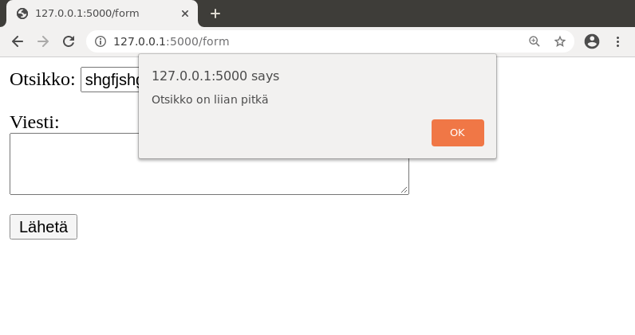
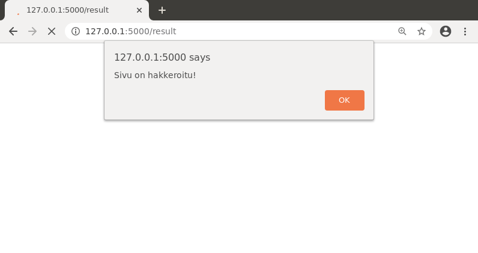
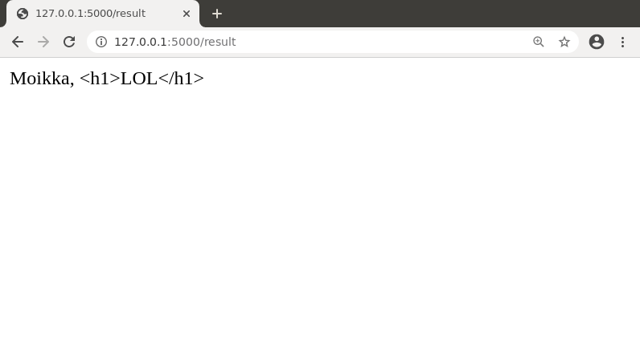
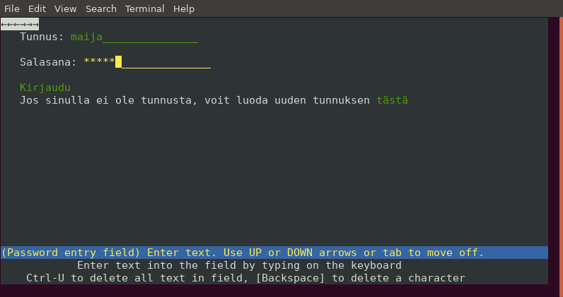
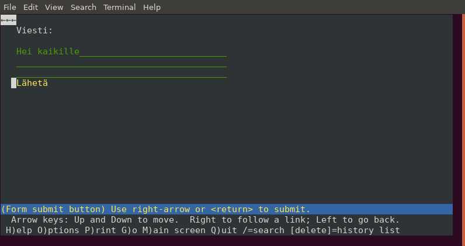
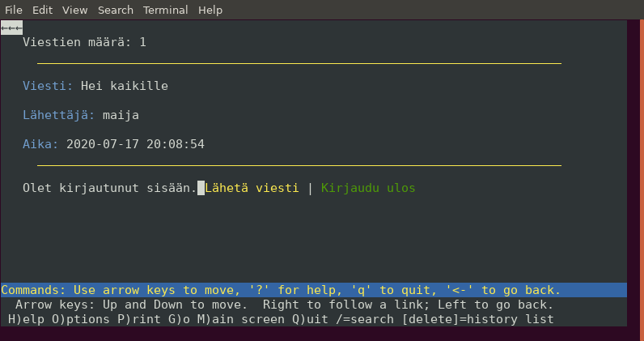
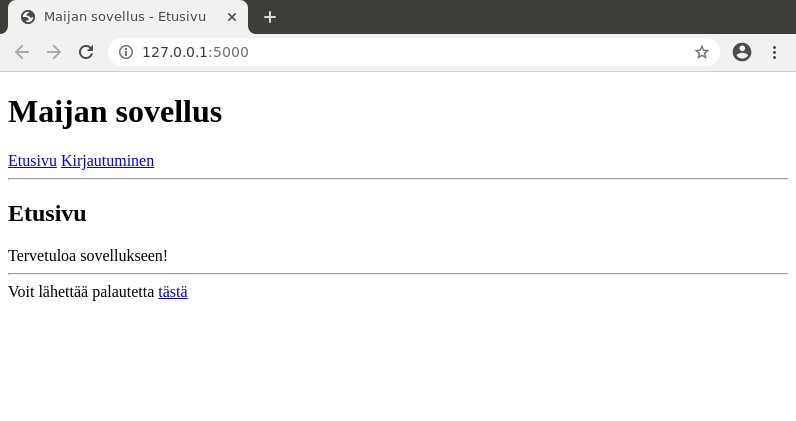
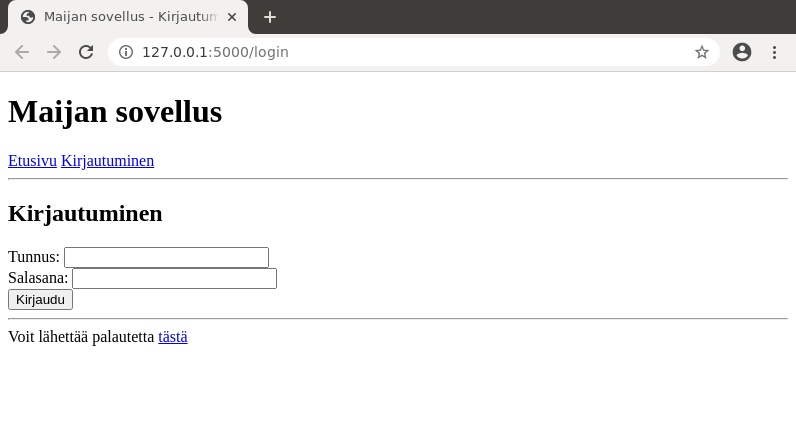

Osa 4
Kun sovellus on toiminnassa julkisella palvelimella, sitä voi käyttää kuka tahansa, joka tietää sovelluksen osoitteen. Tämä osa käsittelee sovelluksen turvallisuuteen ja käytettävyyteen liittyviä asioita, joiden ottaminen huomioon on tärkeä osa sovelluksen viimeistelyä.
Oikeudet ja syötteet
Kun web-sovellus saa käyttäjältä sivupyynnön, sovelluksen tulee tarkastaa ennen toiminnon suorittamista kaksi asiaa: (1) käyttäjällä on riittävät oikeudet toiminnon suorittamiseen ja (2) käyttäjän antama syöte (kuten lomakkeen kautta lähetetyt tiedot) on kelvollinen.
Vaikka sovelluksen linkit ja lomakkeet ohjaisivat käyttäjää toimimaan tietyllä tavalla, ei voi luottaa, että näin tapahtuisi, koska web-tekniikkaa tunteva käyttäjä voi lähettää mitä tahansa sivupyyntöjä palvelimelle. Niinpä sovelluksen tulee aina varautua pahimpaan: vastassa on pahantahtoinen käyttäjä, joka koettaa aiheuttaa vahinkoa sovellukselle.
Käyttäjän oikeudet
Tarkastellaan sovellusta, jossa käyttäjä voi luoda profiilin ja ystävystyä muiden kanssa. Käyttäjä voi katsoa oman profiilinsa ja lisäksi toisen käyttäjän profiilin, jos käyttäjät ovat ystäviä. Lisäksi admin-käyttäjä voi katsoa kenen tahansa profiilin.
Oletetaan, että sivu profile/[id] näyttää käyttäjän profiilin. Esimerkiksi jos käyttäjän id-numero on 123, sivu profile/123 näyttää profiilin. Koska käyttäjä voi kokeilla antaa sivulle minkä tahansa id-numeron, ennen profiilin näyttämistä täytyy tarkastaa huolellisesti, että käyttäjällä on todella oikeus nähdä profiili.
Seuraava koodi tarkastaa, että käyttäjä saa nähdä profiilin:
@app.route("/profile/<int:id>")
def profile(id):
allow = False
if is_admin():
allow = True
elif is_user() and user_id() == id:
allow = True
elif is_user():
sql = "SELECT 1 FROM friends WHERE user1=:user1 AND user2=:user2"
result = db.session.execute(sql, {"user1":user_id(), "user2":id})
if result.fetchone():
allow = True
if not allow:
return render_template("error.html", error="Ei oikeutta nähdä sivua")
...
Ideana on, että muuttuja allow ilmaisee, saako käyttäjä nähdä sivua. Funktiot is_admin ja is_user tarkastavat, onko käyttäjä admin-käyttäjä tai kirjautunut käyttäjä, ja funktio user_id antaa käyttäjän id-numeron. Käyttäjä saa nähdä profiilin, jos hän on admin-käyttäjä, katsoo omaa profiiliaan tai katsoo jonkun ystävänsä profiilia.
Huomaa koodissa käytetty näppärä tapa tarkastaa SQL-kyselyllä, onko taulussa tiettyä riviä. Jos taulussa on rivi, kyselyn tulostaulussa on yksi rivi, jossa on arvo 1. Jos taas taulussa ei ole riviä, kyselyn tulostaulu on tyhjä.
Jos käyttäjällä ei ole oikeutta nähdä sivua, käyttäjälle näytetään virhesivu sopivalla viestillä. Tällä sivulla käyttäjälle voi myös tarjota mahdollisuuden kirjautua sisään, koska virhe voi johtua siitä, että käyttäjällä olisi oikeus nähdä sivu mutta hän ei ole kirjautunut sisään.
Syöte lomakkeesta
Käyttäjä voi koettaa antaa lomakkeen kautta mitä tahansa tietoa, joten sovelluksen tulee tarkastaa ennen toiminnon toteuttamista, että tieto on kelvollista.
Tarkastellaan esimerkkinä seuraavaa lomaketta, jonka kautta käyttäjä pystyy lähettämään uuden viestin keskustelualueelle:
<form action="/send" method="POST">
Otsikko: <input type="text" name="title">
Viesti: <textarea name="message"></textarea>
<input type="submit" value="Lähetä">
</form>
Tässä riskinä on, että käyttäjä syöttää lomakkeen kautta hyvin paljon tietoa. Esimerkiksi käyttäjä voi antaa viestille otsikon, jossa on miljoona merkkiä, mikä veisi paljon tilaa tietokannassa ja sotkisi sivuston ulkoasun. Niinpä lomakkeen käsittelijän tulee tarkastaa, että syötteet ovat järkevän pituisia. Voimme toteuttaa tämän tähän tapaan:
@app.route("/send", methods=["POST"])
def send():
title = request.form["title"]
message = request.form["message"]
if len(title) > 100:
return render_template("error.html", error="Otsikko on liian pitkä")
if len(message) > 5000:
return render_template("error.html", error="Viesti on liian pitkä")
...
Tässä viestin otsikko saa olla enintään 100 merkkiä ja sisältö saa olla enintään 5000 merkkiä. Jos nämä rajat ylittyvät, viestiä ei tallenneta vaan käyttäjä ohjataan virhesivulle.
Voimme vielä parantaa käyttökokemusta lisäämällä viestin lähetyssivulle JavaScript-koodin, joka tarkastaa lomakkeen sisällön selaimen puolella ennen lomakkeen lähettämistä:
<form action="/send" method="POST" onsubmit="return check(this)">
Otsikko: <input type="text" name="title">
Viesti: <textarea name="message"></textarea>
<input type="submit" value="Lähetä">
</form>
<script>
function check(form) {
if (form.title.value.length > 100) {
alert("Otsikko on liian pitkä");
return false;
}
if (form.message.value.length > 5000) {
alert("Viesti on liian pitkä");
return false;
}
return true;
}
</script>
Tässä tapauksessa lomake lähetetään palvelimelle vain, jos funktio check palauttaa arvon true. Nyt ilmoitus pituuden ylittymisestä tulee jo selaimen puolella:

Tarkastus JavaScriptillä ei ole kuitenkaan luotettava, koska käyttäjä saattaa esimerkiksi kytkeä JavaScriptin pois selaimen asetuksista. Niinpä joka tapauksessa tarkastus täytyy olla palvelimella lomakkeen käsittelijässä.
Huomaa, että käyttäjän syötteen muotoa ei yleensä kannata yrittää tarkastaa kovin tarkasti, koska tämä menee helposti pieleen. Esimerkiksi verkko on täynnä virheellisiä sähköpostiosoitteen muodon tarkastajia, jotka hylkäävät toimivia osoitteita. Toisaalta käyttäjä voi aina halutessaan antaa keksittyä tietoa, kuten sähköpostiosoitteen lol@mikkihiiri.fi, joka menee läpi kaikista tarkastuksista.
Tietoturva
SQL-injektio
SQL-injektio on tietoturvaongelma, joka syntyy siitä, että SQL-komennon osaksi laitetaan käyttäjän syöte yhdistämällä merkkijonoja. Tarkastellaan esimerkkinä seuraavaa koodia, jonka tarkoituksena on päivittää käyttäjän sähköpostiosoite:
@app.route("/update", methods=["POST"])
def update():
check_user()
user_id = session["user_id"]
email = request.form["email"]
sql = "UPDATE users SET email='" + email + "' WHERE id=" + str(user_id)
db.session.execute(sql)
...
Yllä oleva koodi sallii SQL-injektion, koska käyttäjän antama syöte liitetään suoraan SQL-komennon osaksi ja käyttäjä voi muuttaa tämän avulla SQL-komennon rakennetta. Esimerkiksi käyttäjä voi antaa sähköpostiosoitteeksi ', is_admin=TRUE --, jolloin komennosta tulee seuraavanlainen (olettaen, että käyttäjän id-numero on 123):
UPDATE users SET email='', is_admin=TRUE --' WHERE id=123
Tämä komento muuttaa kaikki sovelluksen käyttäjät admin-käyttäjiksi ja myös poistaa kaikki sähköpostiosoitteet. Tässä SQL-komennon rakenne muuttuu merkittävästi, koska käyttäjän antama syöte lisää muutettavan sarakkeen is_admin sekä poistaa komennon loppuosan, joka rajaa muutettavan käyttäjän (SQL:ssä merkintä -- aloittaa kommentin). Vastaavasti käyttäjä voisi hakea SELECT-kyselyssä tietoa, jota hänen ei pitäisi pystyä saamaan.
Tehokas tapa estää SQL-injektio on yhdistää syötteet SQL-komentoihin parametrien avulla, kuten olemme tehneet kaikissa kurssin esimerkeissä. Voimme poistaa SQL-injektion yllä olevasta koodista muuttamalla koodia näin:
@app.route("/update", methods=["POST"])
def update():
check_user()
user_id = session["user_id"]
email = request.form["email"]
sql = "UPDATE users SET email=:email WHERE id=:user_id"
db.session.execute(sql, {"email":email, "user_id":user_id})
...
Tämän ansiosta muuttujan email sisältö ei voi sotkea SQL-komennon rakennetta. Jos muuttujan osana on heittomerkki ', se muuttuu automaattisesti muotoon \', jolloin aiempi yritys tuottaa seuraavan SQL-komennon:
UPDATE users SET email='\', is_admin=TRUE --' WHERE id=123
Tämä komento muuttaa vain saraketta email eikä aiheuta tietoturvaongelmaa.
XSS-haavoittuvuus
XSS-haavoittuvuus perustuu siihen, että käyttäjän antama syöte yhdistetään sellaisenaan sivun HTML-koodiin, jolloin käyttäjä pystyy vaikuttamaan sivun toimintaan selaimessa antamalla syötteen, jossa on HTML-koodia.
Seuraavassa on esimerkki koodista, jossa on XSS-haavoittuvuus:
@app.route("/result", methods=["POST"])
def result():
name = request.form["name"]
return "Moikka, " + name
Tässä käyttäjä antaa nimensä lomakkeen kautta ja sivu näyttää viestin “Moikka, nimi”. Sivu toimii odotusten mukaisesti, jos käyttäjä antaa nimensä:
Kuitenkin käyttäjä voi antaa nimen sijasta myös merkkijonon, jossa on HTML-koodia. Esimerkiksi jos nimenä on <h1>LOL</h1>, sivu näyttää tältä:

Lisäksi käyttäjä voi antaa JavaScript-koodia, joka myös suoritetaan selaimessa. Esimerkiksi jos nimenä on <script>alert("Sivu on hakkeroitu!")</script>, sivu näyttää tältä:

Tässä tapauksessa XSS-haavoittuvuus ei ole vielä vaarallinen, koska käyttäjä voi muuttaa vain itselleen näkyvää sivua. Kuitenkin asiasta tulee ongelma, jos käyttäjän syöte tallennetaan palvelimelle ja se välittyy muille käyttäjille. Kiusanteon lisäksi JavaScriptin avulla voi tuottaa todellisia tietoturvaongelmia XSS-haavoittuvuuden kautta.
XSS-haavoittuvuuden pystyy estämään pitämällä huolta siitä, että käyttäjän antamia syötteitä ei näytetä koskaan sivulla sellaisenaan. Kun käytämme Flaskissa sivupohjia, tämä tapahtuu automaattisesti. Esimerkiksi seuraavassa koodissa ei ole XSS-haavoittuvuutta:
@app.route("/result", methods=["POST"])
def result():
name = request.form["name"]
return render_template("result.html", name=name)
Kun muuttuja name näytetään sivupohjassa, sen sisältöä muutetaan automaattisesti niin, että HTML-koodia ei suoriteta:

Käytännössä esimerkiksi merkit < ja > muuttuvat muotoon < ja >, jolloin selain näyttää nämä merkit sellaisenaan eikä tulkitse niitä HTML-tagien osiksi.
Jos emme käyttäisi sivupohjia, merkit tulisi muuttaa jollain toisella tavalla. Esimerkiksi Werkzeug-kirjastossa on funktio escape, joka hoitaa tämän asian. Kuitenkin hyvä käytäntö on käyttää aina sivupohjia, jolloin XSS-haavoittuvuuden riski katoaa automaattisesti.
CSRF-haavoittuvuus
CSRF-haavoittuvuus syntyy, kun web-sovellus ei varmista, että kirjautuneen käyttäjän tekemä sivupyyntö todella tulee käyttäjältä. Tarkastellaan esimerkkinä seuraavaa lomaketta, jonka kautta käyttäjä voi lähettää uuden viestin:
<form action="/send" method="POST">
Uusi viesti:
<textarea name="message"></textarea>
<input type="submit" value="Lähetä">
</form>
@app.route("/send", methods=["POST"])
def send():
check_user()
user_id = session["user_id"]
message = request.form["message"]
sql = "INSERT INTO messages (user_id, message) VALUES (:user_id, :message)"
db.session.execute(sql, {"user_id":user_id, "message":message})
...
Tässä lomakkeessa on CSRF-haavoittuvuus, koska hyökkääjä voi houkutella kirjautuneena olevan käyttäjän ulkopuoliselle sivulle, joka kutsuu taustalla sivua send käyttäjän tietämättä. Koska käyttäjä on kirjautuneena selaimessa, viestin lähetys menee läpi. Niinpä hyökkääjä voi lähettää käyttäjän nimissä minkä tahansa itse valitun viestin.
CSRF-haavoittuvuuden avulla hyökkääjä pystyy siis toimimaan käyttäjän nimissä sivustolla, olettaen että käyttäjä on kirjautunut sisään ja hyökkääjä on onnistunut houkuttelemaan hänet ulkoiselle hyökkääjän laatimalle sivulle.
CSRF-haavoittuvuuden pystyy estämään muuttamalla lomaketta niin, että sen osana on käyttäjän istuntoon liittyvä tieto, joka ei ole hyökkääjän tiedossa. Esimerkiksi kun käyttäjä kirjautuu sisään, sovellus voi lisätä istuntoon satunnaisen kentän csrf_token. Tässä on yksi tapa luoda kyseinen kenttä secrets-moduulin avulla:
session["csrf_token"] = secrets.token_hex(16)
Tämän kentän sisältö laitetaan piilokentäksi lomakkeeseen:
<form action="/send" method="POST">
Uusi viesti:
<textarea name="message"></textarea>
<input type="submit" value="Lähetä">
<input type="hidden" name="csrf_token" value="{{ session.csrf_token }}">
</form>
Sitten lomakkeen käsittelijä tarkastaa, että csrf_token on oikea:
if session["csrf_token"] != request.form["csrf_token"]:
abort(403)
Tässä tapauksessa jos csrf_token on väärä, sivun käsittely katkeaa ja tuloksena on HTTP-virhekoodi 403 (Forbidden). Koska hyökkääjä ei tiedä, mikä csrf_token liittyy käyttäjän istuntoon, tämä estää tehokkaasti CSRF-haavoittuvuuden.
Muut salaiset tiedot
Web-sovelluksissa on usein muutakin salaista tietoa, kuten tietokannan salasana, Flaskissa istuntojen salainen avain jne. Näiden tietojen tulee olla turvallisessa paikassa palvelimella niin, että ulkopuoliset eivät pääse niihin käsiksi. Yksi turvallinen tapa on käyttää ympäristömuuttujia kurssin materiaalissa esitetyllä tavalla.
Salaista tietoa ei erityisesti saa laittaa GitHubiin. Tutkimalla GitHubin käyttäjien projekteja voi löytää paljon salaista tietoa, jonka ei kuuluisi olla siellä. Pidä huoli, että oma projektisi ei ole yksi niistä. Jos kuitenkin vahingossa laitat GitHubiin salaista tietoa, niin huomaa, että pelkkä tiedon poistaminen repositoriosta ei riitä, koska myös tiedostojen muutoshistoria on tallessa. Lisätietoa asiasta on esimerkiksi GitGuardian-sivustolla.
Käytettävyys
Sovelluksen toimivuuden ja turvallisuuden lisäksi on tärkeää, että sovellusta on mukavaa käyttää. Tähän kuuluu muun muassa seuraavia asioita:
- Sivut latautuvat nopeasti ja sovellus reagoi välittömästi, kun käyttäjä siirtyy sivulta toiselle tai lähettää lomakkeen.
- Käyttäjälle on selvää, mitä sovelluksen toiminnot tekevät ja miten niitä on tarkoitus käyttää.
- Kun käyttäjä suorittaa toiminnon, sovellus joko ilmaisee selkeästi, että toiminto onnistui, tai näyttää ymmärrettävän virheilmoituksen.
- Sovellus toimii eri selaimilla ja eri laitteissa ja olettaa mahdollisimman vähän käyttäjän ympäristöstä.
- Sovellusta pystyy käyttämään hyvin myös silloin, kun tietokannassa on paljon tietoa (usein sovellusta kehitettäessä tietoa on vain vähän).
Verkossa on paljon sekä hyvin että huonosti toimivia sovelluksia. Hyvin toimivat sovellukset soveltuvat omien sovellusten esikuviksi, kun taas huonosti toimivat sovellukset muistuttavat siitä, mitä virheitä kannattaa varoa omissa sovelluksissa.
Hyvä tulikoe sovellukselle on kokeilla jossain vaiheessa sen toimintaa tekstiselaimessa. Esimerkiksi osassa 3 tehty keskustelusovellus näyttää seuraavalta Lynx-selaimessa:



Tässä tapauksessa sovellusta pystyy käyttämään hyvin tekstiselaimessa, mikä on merkki siitä, että se toimii hyvin monenlaisissa ympäristöissä. Usein tähän tavoitteeseen päästään automaattisesti toteuttamalla sivut suoraviivaisella HTML:llä, jossa elementtejä on käytetty niiden merkityksen mukaisesti.
Sovellus on saavutettava, kun sen suunnittelussa on otettu huomioon eri käyttäjäryhmät. Esimerkiksi näkövammaiset käyttävät ohjelmia, jotka lukevat ääneen verkkosivujen sisältöä, jolloin on tärkeää, että oleellinen sisältö on saatavilla tekstimuodossa ja HTML-elementtejä on käytetty loogisesti. Lisää tietoa asiasta löydät esimerkiksi suomeksi Ronja Ojan materiaalista ja englanniksi W3C:n tutoriaalista ja Mozillan materiaalista.
Ulkoasun toteutus
Yhteinen ulkoasu
Yleensä kaikilla sovelluksen sivuilla on samantapainen ulkoasu, jolloin on hyvä tapa määritellä ulkoasu vain yhdessä paikassa ja viitata siihen muilla sivuilla. Esimerkiksi seuraava tiedosto layout.html määrittelee ulkoasun:
layout.html
<!doctype html>
<title>Maijan sovellus - {% block title %}{% endblock %}</title>
<h1>Maijan sovellus</h1>
<a href="/">Etusivu</a>
<a href="/login">Kirjautuminen</a>
<hr>
{% block content %}{% endblock %}
<hr>
Voit lähettää palautetta <a href="#">tästä</a>
Tässä block-kohdat ovat sellaisia, joiden sisältö muuttuu riippuen sivusta. Kohtaan title tulee sivun otsikko ja kohtaan content tulee sivun varsinainen sisältö.
Ulkoasun saa käyttöön muilla sivuilla extends-komennon avulla seuraavasti:
index.html
{% extends "layout.html" %}
{% block title %}Etusivu{% endblock %}
{% block content %}
<h2>Etusivu</h2>
Tervetuloa sovellukseen!
{% endblock %}
login.html
{% extends "layout.html" %}
{% block title %}Kirjautuminen{% endblock %}
{% block content %}
<h2>Kirjautuminen</h2>
<form action="/login" method="POST">
Tunnus: <input type="text" name="username"> <br>
Salasana: <input type="password" name="password"> <br>
<input type="submit" value="Kirjaudu">
</form>
{% endblock %}
Tässä tapauksessa sivut näyttävät seuraavilta:


Ulkoasun suunnittelu
Nettisivujen ulkoasun toteuttamiseen käytetään CSS-kieltä, jonka avulla voi määrittää sivun asettelun, värit, fontit, jne. Ulkoasun suunnittelu vaatii toisaalta tietoa CSS:n ominaisuuksista ja toisaalta graafista silmää. Kurssin taustamateriaalissa on esimerkki, jossa luodaan sivuston ulkoasu CSS:n avulla.
Ulkoasu kirjaston avulla
Toinen tapa toteuttaa ulkoasu on käyttää valmista ulkoasukirjastoa. Tämän tavan etuna on, että ulkoasua ei tarvitse suunnitella tyhjästä vaan voi käyttää valmiita komponentteja, mutta toisaalta lopputulos ei ole välttämättä yksilöllinen. Kurssin taustamateriaalissa on esimerkki, jossa luodaan ulkoasu suositun Bootstrap-kirjaston avulla.
CSS:n muutosten näkyminen
Huomaa, että kun muokkaat CSS-tiedostoa, muutos ei tule välttämättä näkyviin selaimessa, vaikka lataisit sivun uudestaan. Syynä tähän voi olla, että CSS-tiedosto on selaimen välimuistissa. Ratkaisu ongelmaan on ladata sivu uudestaan täydellisesti, mikä tapahtuu monissa ympäristöissä painamalla Control + F5.